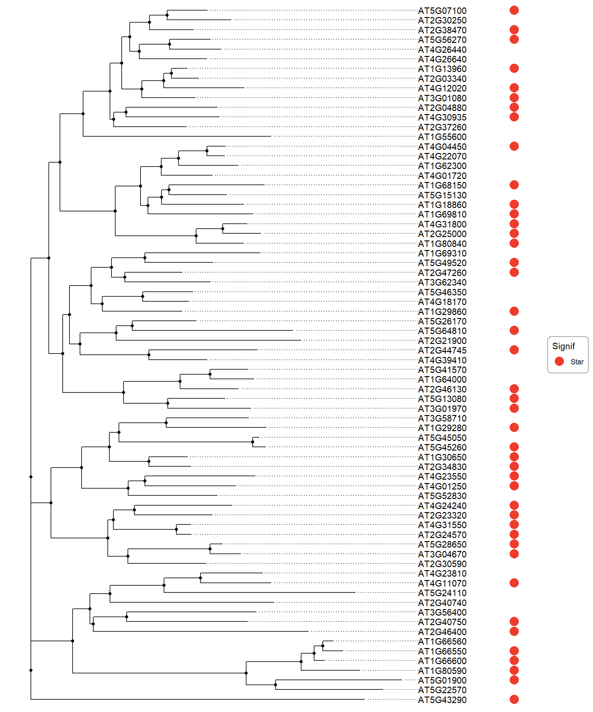
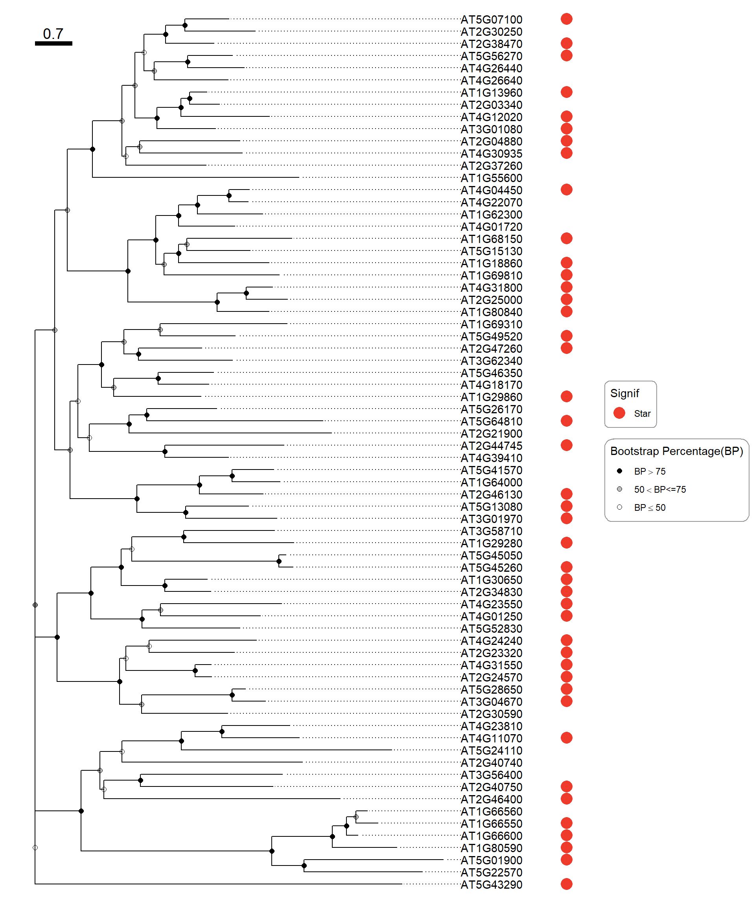
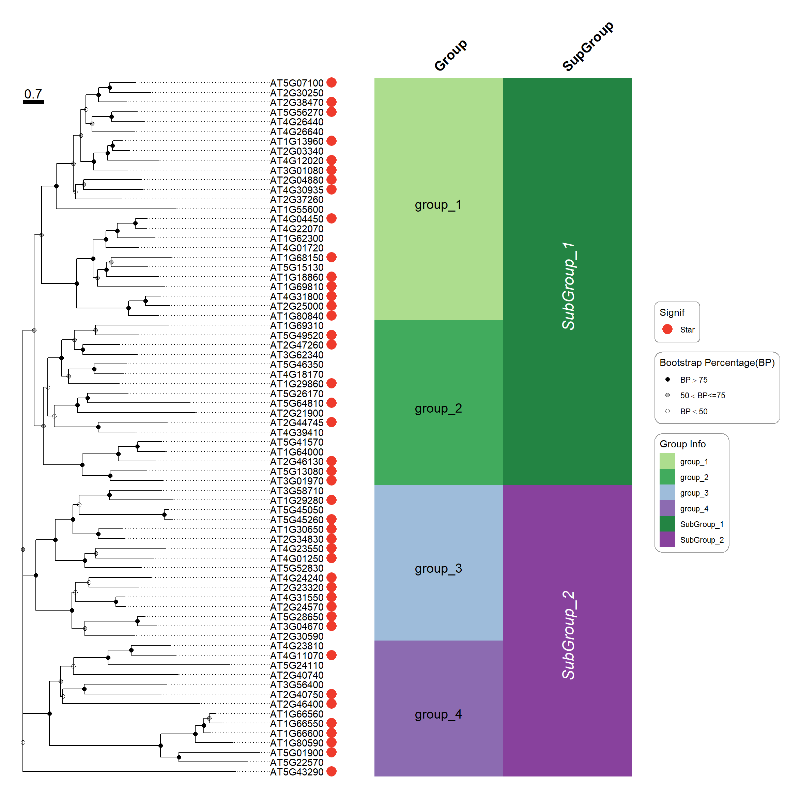
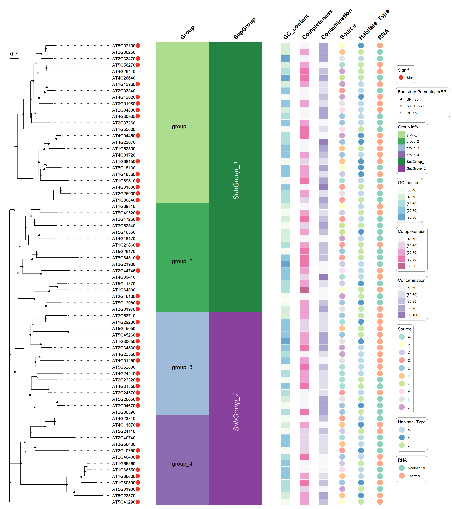
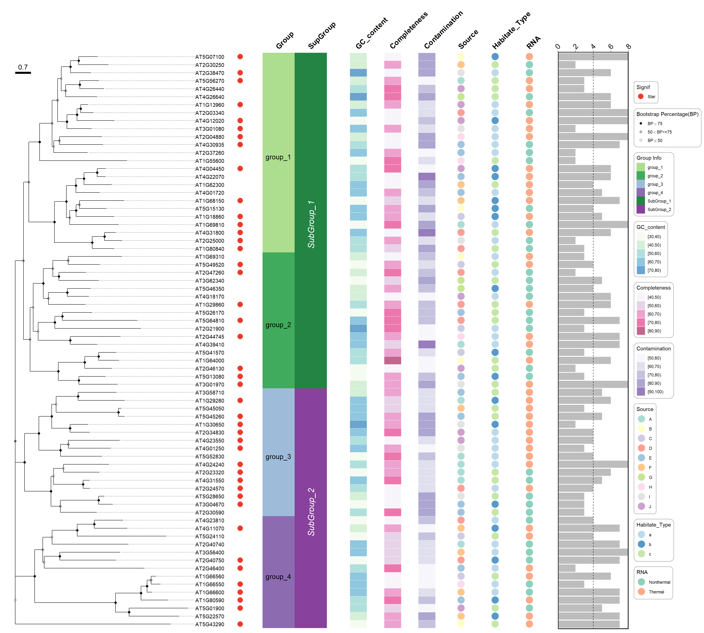

rm(list = ls())
library(tidyverse)
library(ggtree)
library(treeio)
library(tidytree)
library(ggfun)
library(aplot)
library(ggnewscale)
library(patchwork)
library(ggstar)1 使用R语言画ISME中的进化树
使用R画ISME 论文 中Figure 1. 中的进化树图。
论文PDF文件
1.1 加载R包
1.2 加载数据
####----load Data----####
tree <- treeio::read.newick(file = "./data/WRKY_TAIR.pep.muscle_1.treefile",
node.label = "support")
tree2 <- root(tree %>% as.phylo(), node=78)
get_taxa_name(root(tree %>% as.phylo(),
node=78) %>%
ggtree(., branch.length="none") ) -> tree.sort.id
star_data <- read_delim(file = "./data/star_data_1.csv", col_names = T, delim = ",")
group_info <- read_delim(file = "./data/group_info_1.csv", delim = ",", col_names = T)
annotation_df <- read_delim(file = "./data/annotation_df_1.csv",
delim = ",",
col_names = T)
bar_df <- read_delim(file = "./data/bar_df_1.csv", delim = ",", col_names = T)1.3 画进化树
####----Tree Plot----####
tree_df <- as_tibble(tree) %>%
dplyr::left_join(star_data, by = c("label" = "ID"))
as_tibble(tree)# A tbl_tree abstraction: 142 × 5
# which can be converted to treedata or phylo
# via as.treedata or as.phylo
parent node branch.length label support
<int> <int> <dbl> <chr> <dbl>
1 73 1 2.49 AT2G40750 NA
2 73 2 2.67 AT3G56400 NA
3 84 3 1.70 AT1G18860 NA
4 85 4 1.19 AT5G15130 NA
5 85 5 1.98 AT1G68150 NA
6 83 6 2.17 AT1G69810 NA
7 86 7 1.06 AT4G01720 NA
8 87 8 1.23 AT1G62300 NA
9 88 9 0.364 AT4G22070 NA
10 88 10 0.385 AT4G04450 NA
# ℹ 132 more rowsp1 <- ggtree(tree2) %<+% tree_df +
geom_nodepoint() +
geom_tiplab(align = T, offset = 0.3) +
# geom_nodelab(aes(label = node)) +
geom_tippoint(aes(color = star), x = 10, size = 5) +
# geom_star(aes(starshape = star, fill = star), starshape = 1, x = 10)+
scale_color_manual(values = "#ef3b2c",na.translate=FALSE, name = "Signif") +
theme_tree() +
theme(legend.background = element_roundrect(color = "#969696")) +
xlim(NA, 10)
p1

p2 <- p1+
# annotate(geom = "text", x = 6, y= 4.5, label = "OutGroup") +
geom_hilight(node = 80,
type = "gradient",
gradient.direction = 'tr',
alpha = .8,
fill = "#addd8e",
to.bottom = T,
extend = 5.5
) +
geom_hilight(node = 104,
type = "gradient",
gradient.direction = 'tr',
alpha = .8,
fill = "#41ab5d",
to.bottom = T,
extend = 6
) +
geom_hilight(node = 120,
type = "gradient",
gradient.direction = 'tr',
alpha = .8,
fill = "#9ebcda",
to.bottom = T,
extend = 5.6
) +
geom_hilight(node = 78,
type = "gradient",
gradient.direction = 'tr',
alpha = .8,
fill = "#8c6bb1",
to.bottom = T,
extend = 3
) +
geom_nodepoint(aes(fill=cut(support, c(0, 50, 75, 100))),
shape=21, size=2) +
scale_fill_manual(values=c("black", "grey", "white"),
guide='legend', name='Bootstrap Percentage(BP)',
breaks=c('(75,100]', '(50,75]', '(0,50]'),
labels=expression(BP>75, 50 < BP * "<=75", BP <= 50)) +
geom_treescale(x = 0, y = 70, fontsize = 5, linesize = 2) +
geom_tree() +
theme(legend.background = element_roundrect(color = "#969696"))
p2

1.4 给进化树加上条形图和分组信息
####----add bar plot for Group information----####
id <- tree.sort.id
group_info %>%
dplyr::group_by(Group) %>%
dplyr::summarise(count = n()) %>%
dplyr::arrange(desc(Group)) %>%
dplyr::mutate(cumsum = cumsum(count)) %>%
dplyr::mutate(position = cumsum - 0.5 * count) %>%
dplyr::mutate(Type = "Group")-> position1
group_info %>%
dplyr::group_by(SupGroup) %>%
dplyr::summarise(count = n()) %>%
dplyr::arrange(desc(SupGroup)) %>%
dplyr::mutate(cumsum = cumsum(count)) %>%
dplyr::mutate(position = cumsum - 0.5 * count) %>%
dplyr::mutate(Type = "SupGroup")-> position2
group_info %>%
dplyr::mutate(ID = factor(ID, levels = rev(tree.sort.id), ordered = T)) %>%
tidyr::pivot_longer(cols = -ID, names_to = "Type", values_to = "Value") %>%
ggplot(aes(x = Type, y = ID)) +
geom_tile(aes(fill = Value), linewidth = 0, color = NA) +
geom_text(data = position1, aes(x = Type, y = position, label = Group),
size = 5,
color = "#000000") +
geom_text(data = position2, aes(x = Type, y = position, label = SupGroup),
angle = 90,
fontface = 3,
size = 6,
color = "#ffffff") +
scale_fill_manual(
values = c(
"group_1" = "#addd8e",
"group_2" = "#41ab5d",
"group_3" = "#9ebcda",
"group_4" = "#8c6bb1",
"SubGroup_1" = "#238443",
"SubGroup_2" = "#88419d"),
name = "Group Info") +
scale_x_discrete(position = "top") +
labs(x = "", y = "") +
theme_bw() +
theme(
panel.background = element_blank(),
panel.border = element_blank(),
panel.grid = element_blank(),
axis.text.y = element_blank(),
axis.ticks.y = element_blank(),
axis.text.x.top = element_text(size = 15, color = "#000000", angle = 45, hjust = 0, face="bold"),
axis.ticks.x.top = element_blank(),
plot.background = element_blank(),
legend.background = element_roundrect(color = "#969696")
)-> p_class
p_class %>% insert_left(p2, width = 1.2)

1.5 添加其他注释信息
####---- add Other annotation information----####
annotation_df %>%
dplyr::mutate(GC_content = cut(GC_content, breaks = c(30,40,50,60,70,80), right = F)) %>%
dplyr::mutate(Completeness = cut(Completeness, breaks = c(40,50,60,70,80,90), right = F)) %>%
dplyr::mutate(Contamination = cut(Contamination, breaks = c(50,60,70,80,90,100), right = F)) %>%
tidyr::pivot_longer(cols = -ID, names_to = "Type", values_to = "Value") %>%
dplyr::mutate(Type = factor(Type, levels = c("GC_content", "Completeness", "Contamination",
"Source", "Habitate_Type", "RNA"),
ordered = T)) %>%
dplyr::mutate(ID = factor(ID, levels = rev(tree.sort.id), ordered = T)) %>%
ggplot(aes(x = Type, y = ID)) +
geom_tile(fill = "#ffffff", width = 0.8) +
geom_tile(data = . %>% dplyr::filter(Type == "GC_content"),aes(fill = Value), width = 0.5, alpha = 0.6, color = "white") +
scale_fill_manual(values = c('#f0f9e8','#bae4bc','#7bccc4','#43a2ca','#0868ac'),
name = "GC_content",
guide = guide_legend(order = 1)) +
new_scale_fill() +
geom_tile(data = . %>% dplyr::filter(Type == "Completeness"),aes(fill = Value), width = 0.5, alpha = 0.6, color = "white") +
scale_fill_manual(values = c('#f1eef6','#d7b5d8','#df65b0','#dd1c77','#980043'),
name = "Completeness",
guide = guide_legend(order = 2)) +
new_scale_fill() +
geom_tile(data = . %>% dplyr::filter(Type == "Contamination"),aes(fill = Value), width = 0.5, alpha = 0.6, color = "white") +
scale_fill_manual(values = c('#f2f0f7','#cbc9e2','#9e9ac8','#756bb1','#54278f'),
name = "Contamination",
guide = guide_legend(order = 3)) +
new_scale_fill() +
geom_point(data = . %>% dplyr::filter(Type == "Source"), aes(fill = Value), size = 7, alpha = 0.75, shape = 21, color = "white") +
scale_fill_manual(values = c('#8dd3c7','#ffffb3','#bebada','#fb8072','#80b1d3',
'#fdb462','#b3de69','#fccde5','#d9d9d9','#bc80bd'),
name = "Source",
guide = guide_legend(order = 4)) +
new_scale_fill() +
geom_point(data = . %>% dplyr::filter(Type == "Habitate_Type"), aes(fill = Value), size = 7, alpha = 0.75, shape = 21, color = "white") +
scale_fill_manual(values = c('#a6cee3','#1f78b4','#b2df8a'),
name = "Habitate_Type",
guide = guide_legend(order = 5)) +
new_scale_fill() +
geom_point(data = . %>% dplyr::filter(Type == "RNA"), aes(fill = Value), size = 7, alpha = 0.75, shape = 21, color = "white") +
scale_fill_manual(values = c('#66c2a5','#fc8d62'),
name = "RNA",
guide = guide_legend(order = 6)) +
labs(x = "", y = "") +
scale_x_discrete(position = "top") +
theme_bw() +
theme(
panel.background = element_blank(),
panel.border = element_blank(),
panel.grid = element_blank(),
axis.text.y = element_blank(),
axis.ticks.y = element_blank(),
axis.text.x.top = element_text(size = 15, color = "#000000", angle = 45, hjust = 0, face="bold"),
axis.ticks.x.top = element_blank(),
plot.background = element_blank(),
legend.background = element_roundrect(color = "#969696")
) -> p.annotation
p.annotation %>% insert_left(p_class) %>% insert_left(p2, width = 1.2)

1.6 添加右边的条形图
####---- add bar plot----####
p_bar <- bar_df %>%
dplyr::mutate(ID = factor(ID, levels = rev(tree.sort.id), ordered = T)) %>%
ggplot() +
geom_bar(aes(x = Count, y = ID), fill = "#bdbdbd", stat = "identity") +
scale_x_continuous(expand = c(0,0), position = "top") +
geom_vline(xintercept = 4, linetype = 2) +
labs(x = "", y = "") +
theme_bw() +
theme(
panel.background = element_blank(),
panel.border = element_rect(linewidth = 1.5),
panel.grid = element_blank(),
axis.text.y = element_blank(),
axis.ticks.y = element_blank(),
axis.text.x = element_text(size = 15, color = "#000000", angle = 45, hjust = 0),
legend.background = element_roundrect(color = "#969696")
)1.7 将所有组件结合在一起
####----combine----####
p_combine <- p_bar %>%
insert_left(p.annotation, width = 3) %>%
insert_left(p_class, width = 1) %>%
insert_left(p2, width = 3.5)
# ggsave(filename = "p_combine1.pdf",
# plot = p_combine,
# height = 20,
# width = 18)
p_combine

1.8 系统信息
####----sessionInfo----####
sessionInfo()R version 4.3.1 (2023-06-16 ucrt)
Platform: x86_64-w64-mingw32/x64 (64-bit)
Running under: Windows 11 x64 (build 22621)
Matrix products: default
locale:
[1] LC_COLLATE=Chinese (Simplified)_China.utf8
[2] LC_CTYPE=Chinese (Simplified)_China.utf8
[3] LC_MONETARY=Chinese (Simplified)_China.utf8
[4] LC_NUMERIC=C
[5] LC_TIME=Chinese (Simplified)_China.utf8
time zone: Asia/Shanghai
tzcode source: internal
attached base packages:
[1] stats graphics grDevices utils datasets methods base
other attached packages:
[1] ggstar_1.0.4 patchwork_1.2.0 ggnewscale_0.5.0 aplot_0.2.2
[5] ggfun_0.1.4 tidytree_0.4.6 treeio_1.24.3 ggtree_3.8.2
[9] lubridate_1.9.3 forcats_1.0.0 stringr_1.5.1 dplyr_1.1.4
[13] purrr_1.0.2 readr_2.1.5 tidyr_1.3.1 tibble_3.2.1
[17] ggplot2_3.5.1 tidyverse_2.0.0
loaded via a namespace (and not attached):
[1] gtable_0.3.5 xfun_0.45 htmlwidgets_1.6.4 lattice_0.22-6
[5] tzdb_0.4.0 vctrs_0.6.5 tools_4.3.1 generics_0.1.3
[9] yulab.utils_0.1.4 parallel_4.3.1 fansi_1.0.6 pkgconfig_2.0.3
[13] ggplotify_0.1.2 lifecycle_1.0.4 farver_2.1.2 compiler_4.3.1
[17] munsell_0.5.1 htmltools_0.5.8 yaml_2.3.10 lazyeval_0.2.2
[21] pillar_1.9.0 crayon_1.5.3 cachem_1.0.8 nlme_3.1-164
[25] tidyselect_1.2.1 digest_0.6.35 stringi_1.8.3 labeling_0.4.3
[29] fastmap_1.1.1 grid_4.3.1 colorspace_2.1-1 cli_3.6.2
[33] magrittr_2.0.3 utf8_1.2.4 ape_5.7-1 withr_3.0.1
[37] scales_1.3.0 bit64_4.0.5 timechange_0.3.0 rmarkdown_2.27
[41] bit_4.0.5 gridExtra_2.3 hms_1.1.3 memoise_2.0.1
[45] evaluate_0.24.0 knitr_1.48 gridGraphics_0.5-1 rlang_1.1.3
[49] Rcpp_1.0.12 glue_1.7.0 rstudioapi_0.16.0 vroom_1.6.5
[53] jsonlite_1.8.8 R6_2.5.1 fs_1.6.3